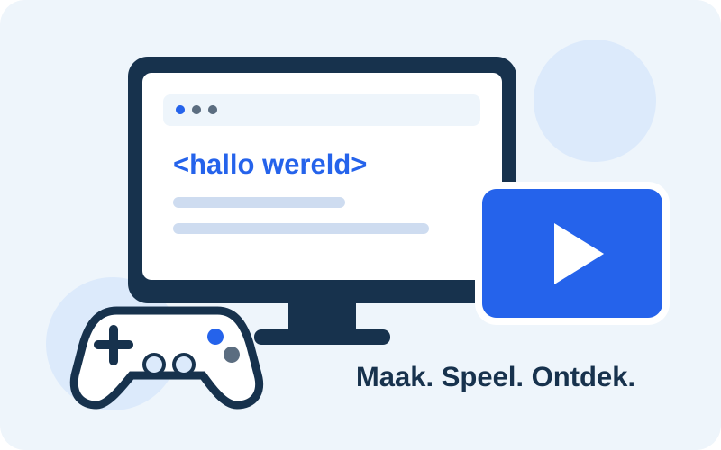

Havo 4B
Ik ben Gido en ik zit in Havo 4B. Deze website maak ik voor informatica. De onderwerpen komen uit Domein C.
Informatica · Havo 4B
Welkom op mijn website. Hier vertel ik iets over mezelf en ontdek je hoe computers, kleuren en AI werken.

Een beetje over mij
Ik ben Gido en ik zit in Havo 4B. Deze website maak ik voor informatica. De onderwerpen komen uit Domein C.
Een van mijn hobby’s is gamen. Ook tijdens een game gebeurt er veel in een computer: invoer, berekeningen en beelden op je scherm.
Ik kijk ook graag series. Een streamingdienst gebruikt compressie om video’s als kleinere bestanden te versturen.
Domein C
Kies een onderwerp. Op elke pagina vind je korte uitleg, een voorbeeld en een video.
Van een druk op je toetsenbord tot een beweging in een game.
Bekijk de pagina →Leer hoe je met acht bits een getal maakt en oefen met Binary Bonanza.
Bekijk de pagina →Ontdek RGB en CMYK en bekijk voorbeelden van kleurcodes.
Bekijk de pagina →Ontdek pixels, vectoren en het verschil tussen lossy en lossless.
Bekijk de pagina →Hoe AI werkt en hoe Gemini op een Google Pixel helpt.
Bekijk de pagina →Even kijken
Waarom deze video? De video van Code.org laat zien wat verschillende computers gemeen hebben. Dat is een goede start voor de onderwerpen op deze site.
▶ Bekijk de video op YouTube ↗